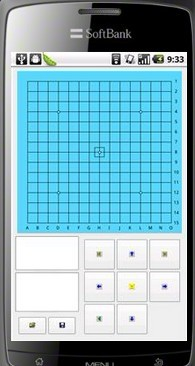

五子棋打谱软件手机版泄图了
#1 五子棋打谱软件手机版泄图了 作者：有志青年 发表时间：2011-11-28 10:34:47

打开棋谱目标，lib棋谱，目前测试20m的棋谱没有问题，安卓手机可用
java版本的即将开发
关键是作者，对不？
四哥，终结者之父，后期版本会有计算功能
看来下次比赛手机放静音也不行了，一律上缴的
［ 雅匪 于 2011-11-28 16:59:29 时花20金币送鲜花一朵］
［ 雅匪 于 2011-11-28 16:59:32 时花20金币送鲜花一朵］
［ 董明 于 2012-5-24 11:23:06 时花20金币送鲜花一朵］
#2 Re:五子棋打谱软件手机版泄图了 作者：小元 发表时间：2011-11-28 11:39:18
android手机早就可以用lib了
#3 Re:五子棋打谱软件手机版泄图了 作者：暮雨迟 发表时间：2011-11-28 13:00:04
恨恨的瞅着俺滴塞班
#4 Re:五子棋打谱软件手机版泄图了 作者：有志青年 发表时间：2011-11-28 13:24:53
楼上不急，下面开发的是java版的，啥手机都能用的
#5 Re:五子棋打谱软件手机版泄图了 作者：萧翎 发表时间：2011-11-28 13:56:13
要求支持IPHONE 还有缩放图的功能#6 Re:五子棋打谱软件手机版泄图了 作者：暖瞳 发表时间：2011-11-28 16:47:12
有没有Iphone版本的？app store里面实在是没有一个像样的五子棋软件。。。#7 Re:五子棋打谱软件手机版泄图了 作者：极地剑客 发表时间：2011-12-1 8:52:43
小四牛B~看标题以为又是无聊的东西~原来可以秒杀20M的谱了~太强大了~而且还要加计算功能~那就BT了~#8 Re:五子棋打谱软件手机版泄图了 作者：白衣神童小剑魔 发表时间：2012-2-2 16:17:25
能不能弄个qq游戏大厅自选座位（不是自动分配）的软件 android#9 Re:五子棋打谱软件手机版泄图了 作者：极地剑客 发表时间：2012-2-6 21:17:27
搞个JAVA的下载看看~#10 Re:五子棋打谱软件手机版泄图了 作者：tears 发表时间：2012-2-8 19:43:40
求IOS版#11 Re:五子棋打谱软件手机版泄图了 作者：天天天开心 发表时间：2012-2-8 20:02:44
要是能有WM系统的 该多好啊
#12 Re:五子棋打谱软件手机版泄图了 作者：圡人 发表时间：2012-10-9 8:21:31
求iphone版#13 Re:五子棋打谱软件手机版泄图了 作者：生活不是林黛玉 发表时间：2012-10-19 17:31:52
hhhhhhhh#14 Re:五子棋打谱软件手机版泄图了 作者：八了个卦 发表时间：2012-12-2 10:03:39
只求安卓或java打谱器的下载链接。。。#15 Re:五子棋打谱软件手机版泄图了 作者：黄伟文 发表时间：2012-12-3 7:44:44
请问图中软件可以在哪里下载。。后期版本已经出了吗？［ 黄药师 于 2012-12-4 22:27:24 时奖励此帖[金币加 100 威望加1］
#16 Re:五子棋打谱软件手机版泄图了 作者：继续沉醉 发表时间：2012-12-4 21:44:44
哈哈哈，再牛逼的触屏，也得安方向盘，这就是我不用触屏手机的原因#17 Re:五子棋打谱软件手机版泄图了 作者：刘琦林 发表时间：2012-12-8 20:30:01
其实我一直想问。。。什么时候能有保存功能。。#18 Re:五子棋打谱软件手机版泄图了 作者：后期 发表时间：2013-2-6 17:00:09
仅有图，没有实物，只好望梅止渴了，期待这个软件有下文啊。